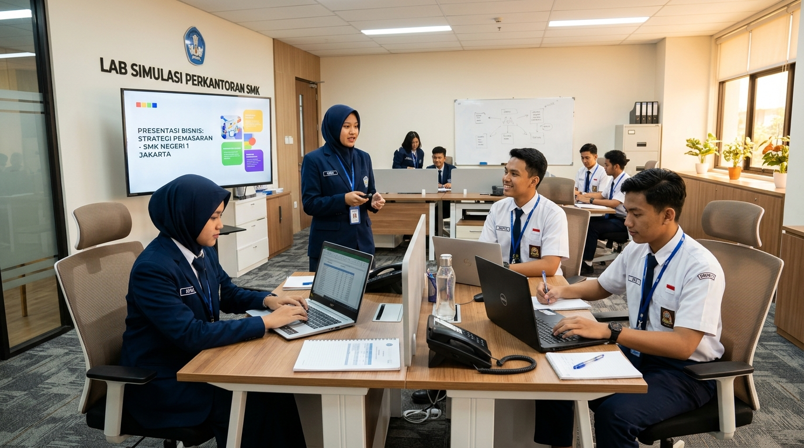
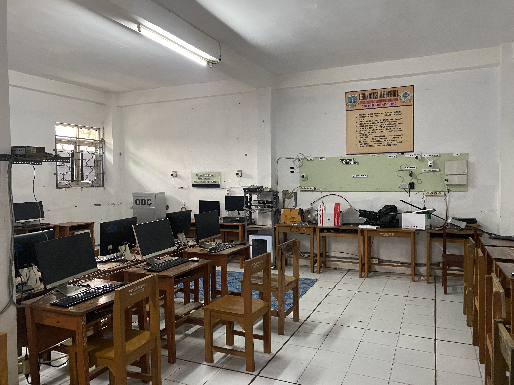
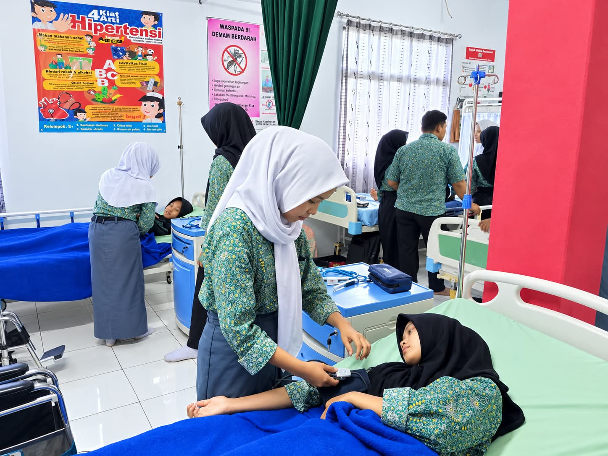
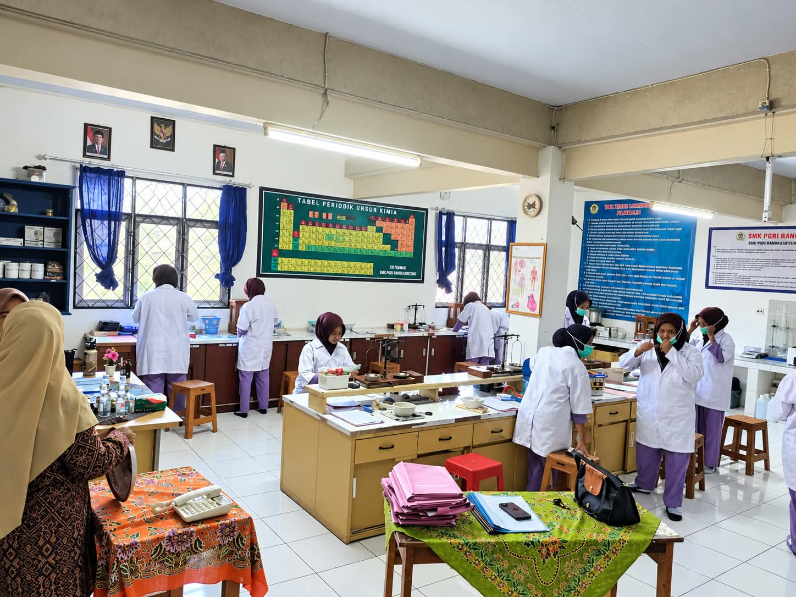
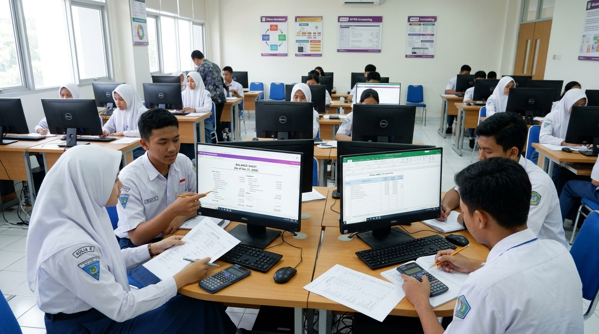

Mempersiapkan sekretaris eksekutif, pengelola arsip digital, dan staf administrasi modern yang profesional, komunikatif, serta beretika kerja tinggi.

Jurusan Manajemen Perkantoran dan Layanan Bisnis (MPLB) di SMKS PGRI Rangkasbitung (dahulu dikenal sebagai OTKP/Administrasi Perkantoran) melatih siswa menguasai tata kelola administrasi korporat modern secara digital.
Siswa dibekali keahlian mengetik cepat 10 jari buta, otomasi perkantoran Google Workspace / Microsoft 365, korespondensi dwibahasa (Indonesia - Inggris), public speaking, protokoler kedinasan, hingga teknik pelayanan pelanggan prima (service excellence).
BNSP Bidang Administrasi
3 Tahun Terakreditasi
Lab Simulasi Kantor Modern
Instansi Pemda & Perusahaan
Keahlian komprehensif yang dipelajari siswa MPLB untuk tampil percaya diri di kantor korporat.
Penguasaan aplikasi perkantoran terintegrasi, pengetikan 10 jari kecepatan tinggi, pembuatan format surat resmi, dan presentasi bisnis interaktif.
Sistem klasifikasi arsip kearsipan elektronik (e-filing), indeksasi surat masuk/keluar, dan keamanan penyimpanan data dokumen perusahaan.
Etiket menerima telepon bisnis, penanganan tamu pimpinan, pelayanan pelanggan ramah (service excellence), serta keprotokolan acara resmi.
Penyusunan agenda perjalanan dinas pimpinan, pengelolaan kas kecil (petty cash) kantor, pengarsipan bukti kas, dan inventarisasi sarana kantor.
Setiap perusahaan, perbankan, dan kantor pemerintah selalu membutuhkan staf administrasi handal.
Mendukung pimpinan dalam mengelola jadwal pertemuan, notulen rapat, komunikasi stakeholder, dan korespondensi eksekutif.
Mengelola alur dokumen harian, perizinan, pengarsipan berkas, serta pengadaan perlengkapan kantor di instansi dan swasta.
Menjadi garda terdepan pelayanan pelanggan di perbankan, hotel, rumah sakit, serta kantor pelayanan terpadu masyarakat.
Mengelola database arsip korporat dan melakukan input data operasional secara teliti dengan sistem komputerisasi terkini.
Melanjutkan studi ke jurusan Administrasi Bisnis, Manajemen, Ilmu Komunikasi, Administrasi Publik, atau Hubungan Internasional.
Bekerja freelance/remote dari rumah melayani klien nasional dan internasional untuk tugas riset, administrasi, dan sosial media.
Temukan keahlian kejuruan lainnya yang sesuai dengan minat dan passion Anda.

Keahlian infrastruktur jaringan komputer, instalasi server Linux & Windows, fiber optic, dan cyber security.
Lihat Jurusan
Kompetensi dasar asuhan medis, perawatan lansia/pasien, serta pelayanan prima klinik & rumah sakit.
Lihat Jurusan
Keterampilan meracik obat, identifikasi simplisia herbal, dan tata kelola apotek serta industri obat.
Lihat Jurusan
Pembukuan akuntansi digital, perpajakan, audit laporan keuangan, dan perbankan modern.
Lihat Jurusan